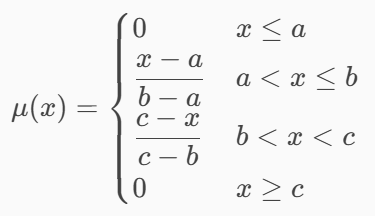
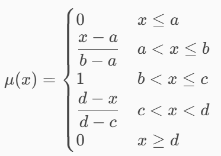
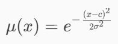
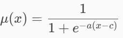
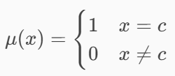

La lógica difusa permite manejar grados de verdad entre 0 y 1, modelando situaciones del mundo real que no son completamente verdaderas ni completamente falsas. Desarrollada por Lotfi A. Zadeh en 1965, es un enfoque matemático que modela la incertidumbre y la ambigüedad, permitiendo grados de verdad.
La lógica difusa permite razonar cuando las cosas no son totalmente verdaderas ni totalmente falsas tratando de simular el razonamiento humano.
Es una extensión de la lógica clásica que permite representar y razonar con información imprecisa, vaga o gradual. Está basado en la teoría de conjuntos difusos, los cuales modelan conceptos del lenguaje humano.
Representa la idea de “A o B”.
μA∪B(x) = max(μA(x), μB(x))
Si μA(x)=0.6 y μB(x)=0.8 → μA∪B(x)=0.8
Representa “A y B”.
μA∩B(x) = min(μA(x), μB(x))
Si 0.6 y 0.8 → resultado = 0.6
Indica qué tanto NO pertenece.
μ¬A(x) = 1 − μA(x)
Si μA=0.7 → complemento = 0.3
Elementos de A que no están en B.
μA−B(x) = min(μA(x), 1 − μB(x))
min(0.9, 0.6) = 0.6

Ejemplo :
Conjunto: Temperatura media
Pico en 25°C
Aumenta gradualmente y luego disminuye

Ejemplo
Conjunto: Velocidad adecuada
Entre 60 y 80 km/h → pertenencia total

Ejemplo
Conjunto: Altura promedio
Máxima pertenencia cerca del promedio
Disminuye gradualmente

Ejemplo :
Conjunto: Temperatura alta
Aumenta progresivamente sin límite brusco

Ejemplo
Salida puntual en sistemas Sugeno.
Manipula los controles para observar cómo cambian los conjuntos difusos y sus operaciones (unión, intersección y complemento).
Zadeh, L. A. (1965). Fuzzy sets. Information and Control, 8(3), 338–353.
https://doi.org/10.1016/S0019-9958(65)90241-X
Ross, T. J. (2010). Fuzzy logic with engineering applications (3rd ed.). Wiley.
ISBN 978-0-470-74376-8
Barua, A., Mudunuri, L. S., & Kosheleva, O. (2014). Why trapezoidal and triangular membership functions work so well: Towards a theoretical explanation. Journal of Uncertain Systems, 8(3), 164–168.
https://jus.worldscientific.com/pdf/jusVol08No3paper01.pdf
Singh, U. N. (2023). Membership functions in fuzzy sets: Analysis and applications. International Journal of Engineering Science and Management, 13(2), 45–52.
https://www.ijesm.co.in/uploads/68/15296_pdf.pdf
© Laura Velazquez |MAI | ITSZ